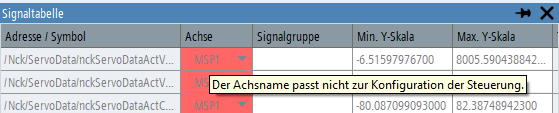

Solange eine geladene Trace-Sitzungsdatei nur zur Visualisierung dient, verzichtet die Anwendung auf die Gültigkeitsprüfung der Konfiguration, um nicht die Anzeige von früher aufgezeichneten Daten durch Fehlerhinweise zu stören. Die Gültigkeitsprüfung erfolgt erst dann, wenn eine neue Trace-Aufzeichnung gestartet wird.
Wenn Sie das Symbol oder den Softkey "Trace starten" in der Bedienoberfläche anklicken, wird überprüft, ob die Trace-Konfiguration auf der Maschine gestartet werden kann. Falls Fehler festgestellt werden, wird eine Popup-Fehlermeldung angezeigt. Nach dem Schließen der Popup-Meldung werden die festgestellten Fehler in der Signaltabelle dadurch angezeigt, dass die betreffenden Datenfelder eine rote Hintergrundfarbe aufweisen. Beim Fahren mit dem Mauszeiger über ein rot hervorgehobenes Datenfeld erscheint ein Tool-Tipp mit genauen Informationen über die Fehlerursache.
| Hinweis |
Beachten Sie, dass nicht nur die Variablen in der Signaltabelle Gültigkeitsfehler aufweisen können, sondern auch die Start- oder Stopp-Trigger-Variablen oder die Abtastraten. Wenn das Symbol und der Softkey für "Trace starten" deaktiviert sind, kann die Trace-Aufzeichnung erst gestartet werden, wenn alle Fehler der Gültigkeitsprüfung behoben sind. |
| Hinweis |
Wenn eine Trace-Konfiguration im Kompatibilitätsmodus geladen wird, sind Gültigkeitsprüfungen nur begrenzt möglich. Darüber hinaus können Fehler der Gültigkeitsprüfung nicht korrigiert werden, da die Konfiguration nicht bearbeitbar ist. In wenigen Fällen bietet Ihnen die Anwendung die Möglichkeit, trotz der festgestellten Fehler einen Start der Aufzeichnung zu versuchen. Es wird jedoch empfohlen, eine neue Trace-Konfiguration zu erstellen. |
In einer NC/PLC-Trace-Konfiguration kann es folgenden Grund haben, wenn das Feld mit dem Achsbezeichner in roter Farbe hervorgehoben ist:
Der Bezeichner einer Achse in der Konfiguration wurde geändert und der aus der Sitzungsdatei geladene Bezeichner ist nicht mehr vorhanden (möglicherweise ist auch die Achsnummer nicht konfiguriert.)
Der aus der Datei geladene Achsbezeichner ist vorhanden, hat aber eine andere Achsnummer.
Sowohl Achsnummer als auch -bezeichner sind richtig, jedoch ist der Achse eine abweichende physikalische Einheit zugeordnet. Ursache hierfür kann eine Änderung des Achstyps (Rundachse/Linearachse) oder des Einheitensystems (mm/in) sein.
Diese Fehler lassen sich durch Auswahl eines anderen Achsparameters für die Variable beheben. Wenn sich nur die Einheit geändert hat, haben Sie auch die Möglichkeit, zur Bestätigung des neuen Achstyps dieselbe Achse nochmals auszuwählen (dabei wird die Einheit automatisch aktualisiert).
Die rote Hintergrundfarbe des Adressfeldes einer NC- oder PLC-Variablen kann folgende Gründe haben:
Die Variable wird auf der aktuellen Steuerung nicht unterstützt, weil die Konfiguration für einen anderen Steuerungstyp erstellt wurde.
Die Eigenschaften der Variablen (z. B. Datentyp, Einheit) in der Variablendatenbank der aktuellen Steuerung weichen von den Daten ab, die aus der Sitzungsdatei geladen wurden.
Eine in der Konfiguration enthaltene PLC-Adresse kann auf der Maschine nicht gelesen werden.
In manchen Fällen ist das Symbol für "Trace starten" schon unmittelbar nach Laden der Sitzungsdatei ausgegraut, ohne dass eine ausführliche Gültigkeitsprüfung erfolgt ist. Dies kann passieren, wenn eine Konfiguration gespeichert wurde, ohne für alle Servo-Variablen Achsparameter auszuwählen. In diesem Fall wird das Feld für den Achsbezeichner der betreffenden Variable(n) leer und mit rotem Hintergrund angezeigt und der Tool-Tipp zum Symbol für "Trace starten" weist auf eine ungültige Konfiguration hin.
In einer der Trace-Konfiguration eines Antriebs kann es folgenden Grund haben, wenn das Feld mit dem Antriebsobjekt in roter Farbe hervorgehoben ist:
Das Antriebsobjekt mit dem geladenen Bus und der DO-Adresse ist nicht im System vorhanden oder ein Antriebsobjekt eines anderen Typs befindet sich an der Adresse.
Der Name des Antriebs oder der zugewiesenen Achse unterscheidet sich von dem in der Sitzungsdatei gespeicherten Namen.
Die Einheit des Antriebsparameters unterscheidet sich von der in der Sitzungsdatei gespeicherten Einheit.